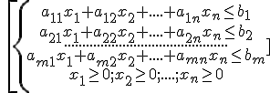

La programación lineal es el campo de la programación matemática dedicado a maximizar o minimizar (optimizar) una función lineal, denominada función objetivo, de tal forma que las variables de dicha función estén sujetas a una serie de restricciones expresadas mediante un sistema de inecuaciones también lineales.
Hay dos tipos:
– maximizar la función objetivo
z = c1x1 + c2x2 +….+ cnxn
con las restricciones:

– minimizar la función objetivo
z = c1x1 + c2x2 +….+ cnxn
con las restricciones: